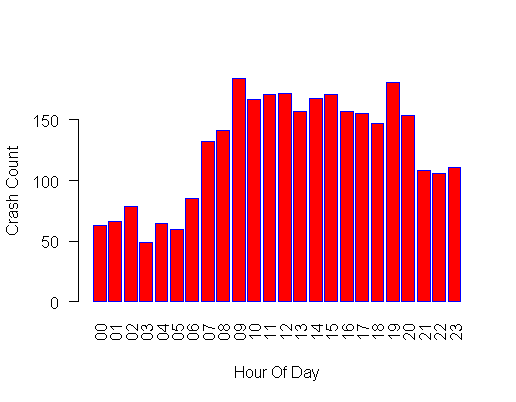
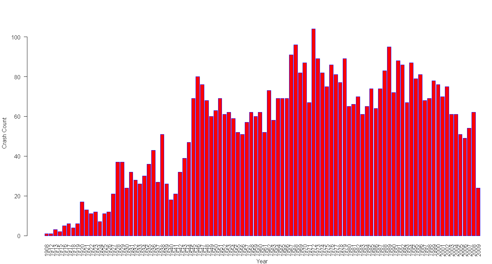
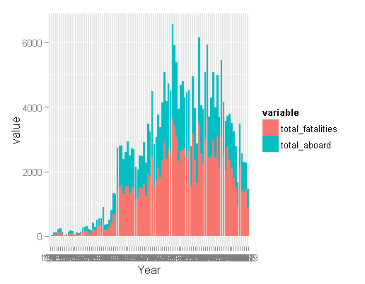
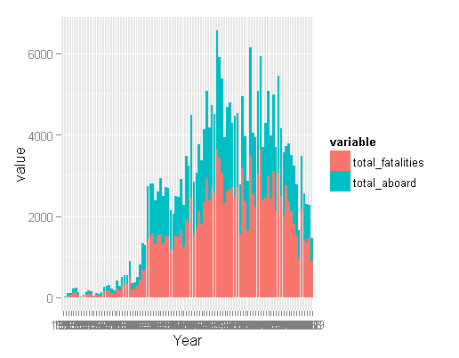
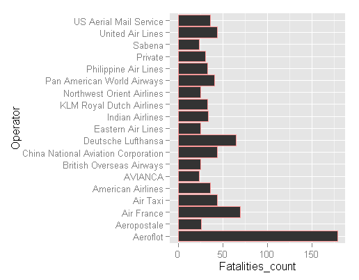

Wouldn't it be something if data could reveal an underlying pattern to all flights that end in fatalities? The following data set provide by OpenData allows for an examination of plane crashes by location, type of aircraft, time, and a summary on the events that transpired. In the first part of explaratory analysis I plotted the times per crash (maybe there's some dark hour that pilots should start avoiding!). But as the plot below shows, there are no hidden messages from that angle.
Next I wanted to answer some basic questions such as: What does the annual trend in plane crashes look like? What about fatalities per year, I would expect a decrease in fatalities, at least for civilian aircraft as technology for predicting engine failure and avoiding turbulent weather zones have improved over the years. What about the airlines themselves? Is there a particlar airline to avoid?
Annual Trends
The plot below depicts the total number of crashes per year. Its interesting that 1972 was the deadliest year, even more so than throughout WWI and WW II . Then again, the number of commercial aircraft taking flight should be taken into consideration as well, and that number would be monotonically increasing. After 1972, despite the increasing number of flights the number of crashes seem to follow a generally decreasing trend, with a sharp drop in the final year for which data is given. The last time there were so few flight crashes per year since 2009 was 1941.
The plot above combines incidents for both Military and Civil aircraft. I'd like to see what the trends would look like if I were to separate them. The plot below shows the annual trends in flight crashes from 1908 to 2009 for both military and civilian (commercial and private) aircraft. The spike in the Military incidents coincides with wars; the first being between 1914 to 1918 then 1939 to 1945. Each subsequent peak and trough could probably be likewise mapped to some political upheaval. Both Military and civilian incidents have subsided significantly in recent decades as compared to the entire period, and nonmilitary aircraft account for more crashes than military.
 Each year the number of passengers surpass the number of fatalities, but does this difference have a trend? The plot below compares the two values, but no dramatic trend emerges.

Each year the number of passengers surpass the number of fatalities, but does this difference have a trend? The plot below compares the two values, but no dramatic trend emerges.

But the interested reader would really want to know: Which airline do I avoid?? Examining a frequency table of the last decade yeilds the following information: The number of different operators involved in fatal crashes has decresed from 70 in 1999 to just 20 in 2009. But that does not give an indication of the number of deaths per operator. The following graph zooms in on the last decade, from 1999 to 2009 and then further truncates the data to include only the operators that are responsible for the top 10 (rated by fatality number, morbid lingo here I admit) crashes in that year. The following plot shows the deadliest airlines. Leading the pack is Aeroflot with 179 incidents, followed by Air France with 70 then Luftansa with 65.
 Finally I thought I would use some clustering to see if I could ascertain whether the reasons for the crash could be segmented. I started off by creating a corpus of words from the summary of each flight crash report. Then, from the corpus, a word cloud was created, just to see which words were dominant and whether a technique like k-means clustering would actually work. The word cloud that resulted is depited below: At this point, I think I would need to clean up the corpus a bit more before proceeding. Words like 'short' shouldn't be in there. Stay tuned. To be continued...